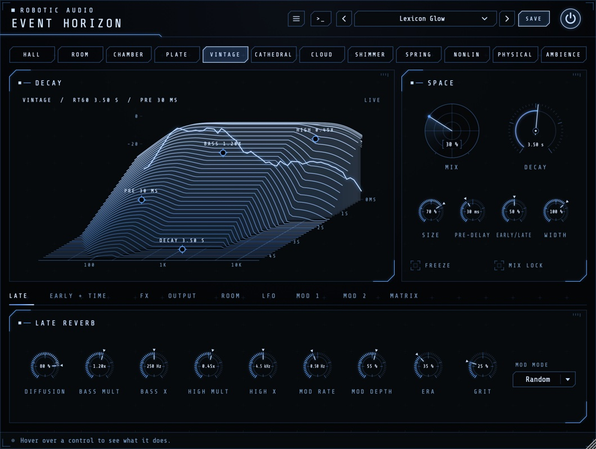
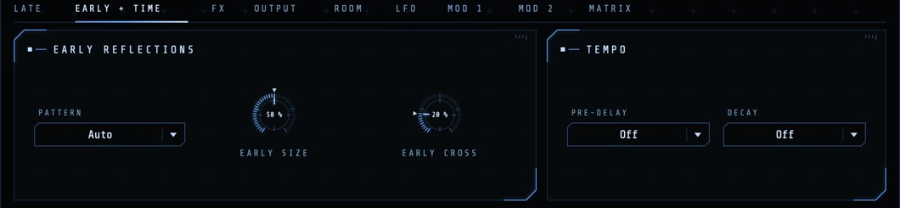
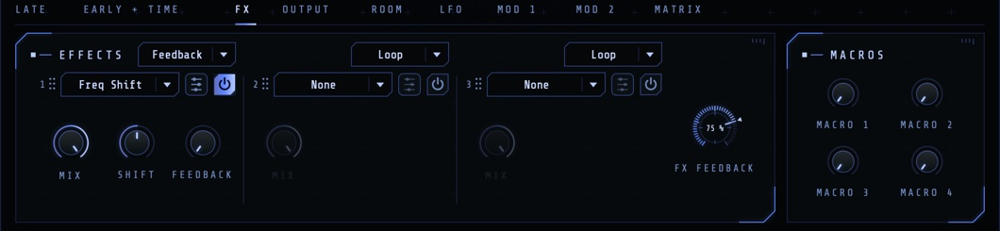
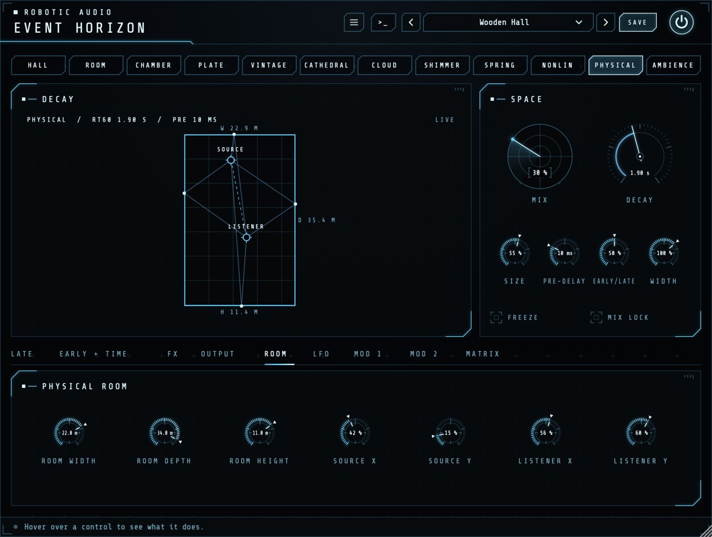
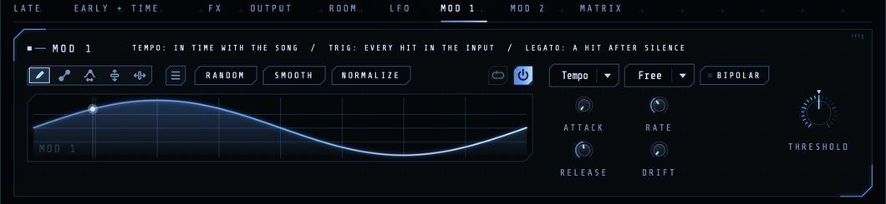

Event Horizon
An algorithmic reverb with twelve designs behind one set of controls: halls, rooms, plates, springs, an '80s machine, endless clouds, shimmer, gated reverb and a real room you can walk around in. Put effects inside the tail and let it grow, climb and sweep as it rings.
- 12 algorithms, one control set
- 13 early reflection patterns
- Three-band decay
- 3 effect slots: before, inside, around or after the reverb
- 2 LFOs, an envelope follower, 2 drawn envelopes
- 8-slot matrix, 4 macros
- Freeze, ducking, tempo sync
- AU · VST3 · Standalone

Quick start
From a dry sound to a space.
Insert or send
On a send (return) track, set Mix to 100 % and lock it with MIX LOCK. On a track itself, start around 20–30 %.
Pick an algorithm
Click one in the strip along the top: Hall for smooth, Plate for bright and dense, Room for natural, Cloud for endless.
Set the length
Turn Decay, or drag the DECAY handle along the landscape's time axis. Pre-delay keeps the dry sound clear in front.
Shape the tone
Drag BASS and HIGH on the landscape: sideways for where they start, up and down for how long they ring.
Clean it up
On OUTPUT, a Low Cut around 200 Hz keeps the bass clear; Ducking lets the reverb bloom only in the gaps.
Try a preset
Vocal Plate, Big Snare '84, Dub Spring, Endless Freeze and Barberpole Rise show its range.
The window
The algorithm strip, the decay landscape and Space card, and nine pages.
- Header
- The preset bar (previous, next, the list, SAVE), the power button (bypass) and the menu (three lines) with this manual. Click the title for version and credits. With an AI key, a >_ opens the designer. Until Event Horizon is licensed, a DEMO or TRIAL chip opens the licence.
- Colours
- Menu > Colours: Cobalt (the default, drifting towards cyan along the strip) or By Algorithm Family: cobalt for the halls and clouds, green for rooms and chambers, amber for Plate, Vintage, Spring and Nonlin, violet for Shimmer. Kept with the session.
- Algorithm strip
- The twelve algorithms; click one to switch. The old tail rings out under the new one, so switching while it plays doesn't cut.
- Decay · Space
- The landscape of the reverb you've set, with handles, and the main controls.
- Pages
- LATE, EARLY + TIME, FX, OUTPUT, ROOM, LFO, MOD 1, MOD 2 and MATRIX.
The window can be resized from its bottom-right corner, and keeps its size with the session. Drag a knob up or down to change it (the value shows on it), Cmd-drag for fine steps, double-click to reset. A knob the matrix moves shows a ring with its range and where it is now; right-click it to route a source to it.
Signal flow
Where everything sits.
The input passes the effects set to Pre, then the pre-delay, then the early reflections and the late reverb side by side (Early/Late balances them). Effects set to Loop play inside the late reverb's own loop, so every pass of the tail goes through them. Effects set to Feedback sit in a loop round the whole reverb. The output's cuts, width and ducking follow, then the Post effects and the equal-power Mix with the dry sound. Event Horizon costs nothing once its input and pre-delay are silent and its tail has died away.
The algorithms
Twelve designs. The controls mean the same in every one; Character A and B are each algorithm's own.
| Algorithm | What it is | Character A · B |
|---|---|---|
| Hall | Smooth and neutral, the all-rounder | Density · Spin |
| Room | Natural rooms, close and believable | Damping · Shape |
| Chamber | Dense and warm, a classic echo chamber | Liveness · Build |
| Plate | Bright and instantly dense, for vocals and snares | Damping · Material |
| Vintage | '80s digital, grainy and lush | Era · Grit |
| Cathedral | Huge and slow to build | Stone · Bloom |
| Cloud | An endless ambient wash | Attack · Drift |
| Shimmer | Pitch-shifted, rising tails | Interval · Shimmer |
| Spring | Dub and surf tanks, with their drip | Tension · Drip |
| Nonlin | Gated and reverse reverb | Envelope · Shape |
| Physical | A real room, from its size and where you stand | Absorption · Diffuse |
| Ambience | Space with almost no tail | Air · Spread |
Hover over Character A or B to read what it does in the algorithm you've chosen. Nonlin and Vintage have no loop to put effects into: their Loop effects play before them.
The decay landscape
The reverb you've set, drawn before you hear it.
Time runs from the back (the moment the sound arrives) to the front, frequency from left to right, level upwards: the pre-delay, the early reflections, how each algorithm builds up and how each band dies away. The wet sound's spectrum runs live along the back. The line above it reads the algorithm, its RT60 and pre-delay.
- PRE · DECAY
- Drag along the time axis for the pre-delay and the decay.
- BASS · HIGH
- Drag sideways for the crossover (Bass X, High X), up or down for the multiplier (Bass Mult, High Mult).
- Physical
- With Physical chosen, the landscape becomes the room from above: drag the SOURCE and the LISTENER where you want them.
Double-click a handle to reset it.
Space
The main controls, beside the landscape.
- Mix
- The reverb against the dry sound, equal power. 100 % for a send, 15–35 % on an insert.
- Decay
- How long the tail takes to die away by 60 dB, in the mids. In Nonlin, the length of its envelope (up to 2.5 s).
- Size
- The space's size, from small to vast: larger spreads the echoes and slows the build-up. In Physical it scales the room.
- Pre-delay
- A gap before the reverb starts (20–80 ms keeps vocals clear in front).
- Early/Late
- 0 % only the early reflections, 50 % both in full, 100 % only the tail.
- Width
- From mono through normal (100 %) to extra wide (150 %).
- FREEZE
- Holds the tail for ever and shuts the input out: an endless pad of whatever was playing. Not in Nonlin.
- MIX LOCK
- Keeps Mix where it is when you load presets: for a send at 100 %, or a mix you've set.
Late
The tail's own controls.
- Diffusion
- How quickly the echoes blur into a smooth wash: low leaves distinct echoes and a grainier start.
- Bass Mult · Bass X
- How long the lows ring against Decay (2× warm and big, 0.5× tight), and where the lows end.
- High Mult · High X
- How long the highs ring (below 1 is natural, 0.2× dark, 1× bright and metallic), and where they start.
- Mod Rate · Mod Depth · MOD MODE
- How fast and far the tail's delays drift: a little keeps long tails from ringing metallic, a lot is lush. Smooth is a calm detune, Random a less regular, chorus-like tail.
- Character A · B
- The algorithm's own two controls, named after what they do there (see the algorithms).
Early + Time
The walls, and the tempo.

- PATTERN
- The walls' reflections: Auto takes the algorithm's own; or Hall, Room, Chamber, Studio, Stage, Cathedral, Club, Slap, Dense, Ambience, Bloom (rising), Corridor (an even flutter), or Off.
- Early Size · Early Cross
- How far apart the reflections lie (a small or a big room's walls), and how much of each side reaches the other's (a fuller, more centred image).
- PRE-DELAY · DECAY
- Set either to a note value at the song's tempo instead of its knob's time; Off uses the knob.
Effects in the tail
Three slots, each in one of four places.

Each slot has an effect menu (Freq Shift, Distortion, Drive, Crusher, Filter and Pitch: the ones that behave inside a loop), a power button, an edit button for its full editor, its Mix (how much of the effect) and its main controls. The menu above each slot sets where it plays:
- Pre
- Before the reverb: the reverb hears the effect.
- Loop
- Inside the tail's own loop: a subtle colour on every pass, growing as the tail rings. (Nonlin and Vintage have none: Pre there.)
- Feedback
- In a loop round the whole reverb: its output through the effect back into its input. FX Feedback sets how much goes round. This is the strong one: a shifter climbs, a filter sweeps the whole tail, the pre-delay makes diffusing echoes. High settings sustain into an endless wash, softly limited and never louder; anything under 100 % dies away once the input stops.
- Post
- After the reverb, on the wet sound.
Drag a slot by its grip to move it; its place comes with it. The four Macros beside the slots move effect settings mapped to them (right-click an effect control to map it), and the matrix can move the macros and each slot's Mix.
Output
Keep the reverb in its place.
- Low Cut · High Cut
- Takes the lows out of the reverb (150–300 Hz keeps bass and kick clean) and the highs (6–8 kHz sits it further back).
- Ducking · Duck Release
- Pushes the reverb down (up to 30 dB) while the dry sound plays and lets it bloom in the gaps; Release sets how quickly it comes back.
- IN · OUT
- The input and output levels.
Room
The Physical algorithm's room.

Physical builds a real room's reflections from its Room Width, Room Depth and Room Height (metres; Size scales them all) and from where the sound and the listener (two microphones) stand: Source X and Y, Listener X and Y. Drag them on the landscape, or turn the knobs. Its Character A, Absorption, is the walls' material (bare concrete to soft absorbers), and B, Diffuse, how much they scatter.
Modulation
Two LFOs, an envelope follower and two drawn envelopes, through an 8-slot matrix.

- LFO 1 · LFO 2
- Rate in Hz, or a note value at the song's tempo (the menu that says Free), and the shape: sine, triangle, saws, square, random steps or a smooth random drift.
- Envelope
- Follows the input's level: Env Attack and Env Release set how quickly, Env Gain its sensitivity for quiet sources.
- Mod 1 · Mod 2
- Drawn envelopes, each with its power switch. Trigger: Tempo in time with the song, Trig on every hit in the input, Legato on a hit after silence; Threshold sets how loud a jump counts as a hit. Draw, loop and shape them as in every Robotic Audio plugin (Attack, Release, Rate, Drift, Bipolar, right-click for ready-made shapes).
- MATRIX
- Eight rows routing a source (LFO 1, LFO 2, Envelope, Mod 1, Mod 2) to a destination: Mix, Decay, Size, Pre-delay, Early/Late, Width, Early Size, Early Cross, Diffusion, Bass and High Mult, Mod Rate and Depth, Character A and B, the cuts, each effect slot's amount, the macros and FX Feedback.
Presets
Twenty-two to start from.
Use the arrows to step through presets or click the name for the list; SAVE stores yours, and the menu has Save As, Delete and Open Folder. They range from Drum Room, Vocal Plate and Chamber Strings to Big Snare '84, Reverse Swell, Dub Spring, Nostromo Drift, Shimmer Choir, Endless Freeze, Barberpole Rise and Pulse Hall. With MIX LOCK on, presets leave your Mix alone.
User presets are XML files in ~/Library/Audio/Presets/Robotic Audio/Event Horizon (macOS) or Documents/Presets/Robotic Audio/Event Horizon (Windows).
Designing with Claude
Describe a space; Claude sets Event Horizon to make it.
With your own Anthropic key, the >_ beside the presets opens a designer: describe what you want, such as "a dark, distant hall for a ballad vocal" or "a spring that drips like dub", and Claude sets the algorithm and every control, the modulation and the effects. NEW SOUND designs from scratch, EDIT THIS changes only what you ask for; REVERT puts it back, SAVE AS PRESET keeps it. The keys are your own (Menu > AI...), shared by every Robotic Audio plugin and kept on this computer; without one nothing of this shows. It needs a network connection and is part of the macOS and Windows plugins.
Licence
Try it, activate it, move it to another computer.
Without a licence, Event Horizon runs as a demo: the sound drops out for 3 seconds every 45 seconds; everything else works, saving included. The header shows DEMO (or TRIAL with the days left); click it, or choose Licence... in the menu.
- ACTIVATE
- Opens the shop in your browser; Event Horizon unlocks a few seconds after you choose your licence.
- START TRIAL
- Everything, free, for 14 days, once per computer.
- SAVE DEVICE FILE / LOAD LICENCE FILE
- For a computer without the internet.
- DEACTIVATE
- Frees this computer's seat for another one.
Recipes
Starting points.
Plate, Decay 1.8 s, Pre-delay 40 ms, Low Cut 250 Hz, Ducking 30 %. Mix 20 % on the vocal, or 100 % on a send.
Nonlin, Decay 400 ms, Envelope (Character A) at its middle for a flat gate, Shape for how long it holds. Early/Late 70 %. Loud, short and very '84.
Cloud, Decay 20 s, Size 90 %. Play a chord, press FREEZE, play over it.
Hall, a Freq Shift of a few Hz in a slot set to Feedback, FX Feedback 75 %. Every pass climbs.
A Filter in a Loop slot; LFO 1 at 1/1 → FX 1 amount. The whole tail breathes in time.
Spring, Decay 3 s, Drip up. Automate Mix on single hits; Low Cut 300 Hz.
Physical, a small room (6 × 8 × 3 m). Move the source close to a wall for a slap, far for a wash.
Mod 1 Trigger Legato, a slow rise, → Decay +40 %. The tail lengthens each time the music pauses.
Specifications
The facts.
| Type | Algorithmic reverb (effect plugin), stereo |
|---|---|
| Algorithms | Hall, Room, Chamber, Plate, Vintage, Cathedral, Cloud, Shimmer, Spring, Nonlin, Physical, Ambience |
| Pre-delay | Up to 1 s, or a note value |
| Early reflections | 13 patterns, Auto per algorithm |
| Effects | 3 slots (Pre, Loop, Feedback, Post), 4 macros |
| Modulation | 2 LFOs, envelope follower, 2 drawn envelopes, 8-slot matrix |
| CPU | Nothing while silent once its tail has died away |
| Formats | AU, VST3 and Standalone (macOS); VST3 and Standalone (Windows, Linux) |